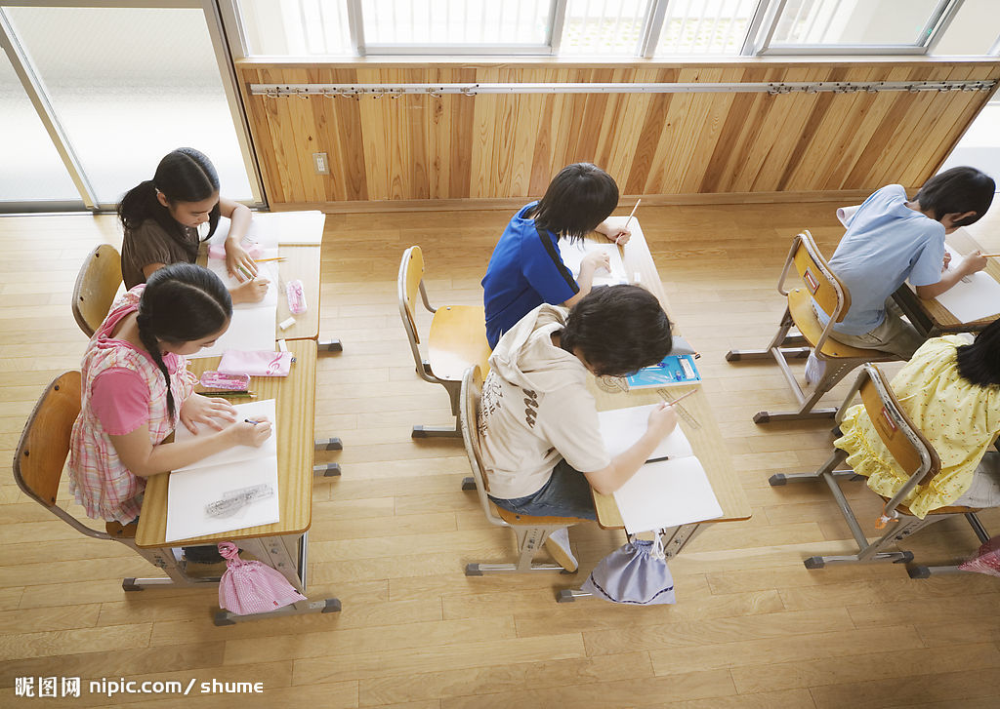
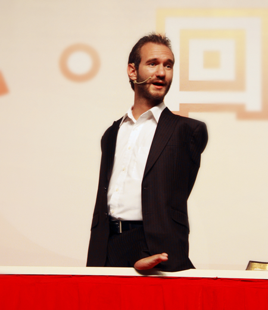

不得不说我到了一个神奇的地方，开始了一段神奇的旅程，我们在这里有方向，有战友，这里的一切让我相见恨晚！一年前的初识到现在，我想学习，再也没有如此让人美妙的地方！这里的学习总是让我有种拨云见月的感觉！
总结着一年的学习！我想我们本该如此美妙学习：
1， 激情是根
2， 总是旧的
3， 总会好起来
1， 激情是根
在学习之初，我们是否会有这种经历呢？我们拿到一本书，一看书名我们如饥似渴，翻开看了几页我们感觉渐渐平淡！还没有进行三分之一我们抛弃了它！从此之后我们再也不动他，哪怕有一天看到我们也告诉自己“不适合我”！我们开始就错了！我们不可能建筑空中楼阁，所以不能让我们的学习一开始就没有目的！
首先我们应该这样去想！我为什么看这本书？我该怎么看这本书？我看到什么程度？学习之初就该这样！我们自己，必须是我们自己有一个充分，巨大，必要的理由说服我们自己学习！
我有一个大学同学，是一个网络游戏的爱好者！我玩过两次网络游戏！每次不超过五分钟！我很难理解为什么会有人如此痴迷，甚至几夜不合眼，有一次我看见他在那里看一个word文档，是一个“秘籍”类的东西，洋洋洒洒十几页，他从第一页到最后一页，用了不到十分钟，然后很顺利的过了“关”！我感到震惊！
一个从没有经过快速阅读训练的人，十几页的文档，起码一万多字，十分钟看完，他的水平是鲜有人达到的1000字/分钟 ！我在那时意识到，激情是一个导火索，他引爆的是人类无穷的潜力！
我们的学习一开始就要告诉自己，走过总会留下什么！老师常说航天工程伟大，更伟大的是构造嫦娥奔月这个故事的先人，他让整个人类有了去月亮上一探究竟的激情！这个激情延续了一千年，中国人看过无数次，至此还没有真正到过，但到现在，他不是一个梦，而是一个计划！
2， 总是旧的

曾经的小学老师曾经告诉我们，不论什么东西，反复看，反复读，我们就懂了！初中，高中，大学的老师都是如此！我们从没有想过这个错了！我们一直奉若真理！实践者……
但是这真的是对的吗？
老师们是对的！老师们的苦心是好的！学习是一个反复的过程，但是对的不一定是最合适，最高效的！在现有的阶段死扣现有的问题我们是在浪费时间！我们解决问题的时间与这个问题的价值相差太远！
提高班展开了一个新的学习蓝图，我们的学习最高效的办法是，有问题，挂起来，继续下去，也许我们可以再这本书的最后解决大部分的问题！这时候告一段落，把这本书上仅存不多的问题束之高阁！继续下一本书！
我们的学习不纠结与某一节，某一章！我们的效率自然就高了！而却学习就像画圆，我们要用圆内的面积向外凸，不论圆多么大，它始终是一个，而不能凭空画圆，最后病的我们也不知道有几个圆！
这种思想就是用旧知识联系新知识，结成一团而不是散沙一盘！这样，我们学的所有的知识就是已有的知识，我们就没有了压力！学习就很轻松！
3，总会好起来

尼克胡哲出生于1982年12月4日。他一生下来就没有双臂和双腿，只在左侧臀部以下的位置有一个带着两个脚指头的小“脚”。看到儿子这个样子，他的父亲吓了一大跳，甚至忍不住跑到医院产房外呕吐；他的母亲也无法接受这一残酷的事实，直到尼克胡哲4个月大她才敢抱他。 时至2005年，他被授予“年度澳大利亚年轻公民”称号。相对于管这个故事说成是一个成功的例子！我更愿意说成这是一个，残障人士自我强大，赢得尊重的故事！
诗人曾经呐喊黎明前的黑暗多么恐怖，可怕！但是，信心是自己给的，光明是自己给的，道路是自己给的！我们行走在这个世界上，我所依靠，我们只能靠我们自己，只有自己强大起来，才能赢得尊重！
我们要有这样的意志，总会好起来！我们就能所向睥睨！
在儿时的我们可以把任何的东西塞进嘴里如果有谁夺走我们还会大哭和抢夺！那份对未知的渴望和坚毅！在现在我们正需要！因为有了这些！我们发现：
学习本该如此美妙！